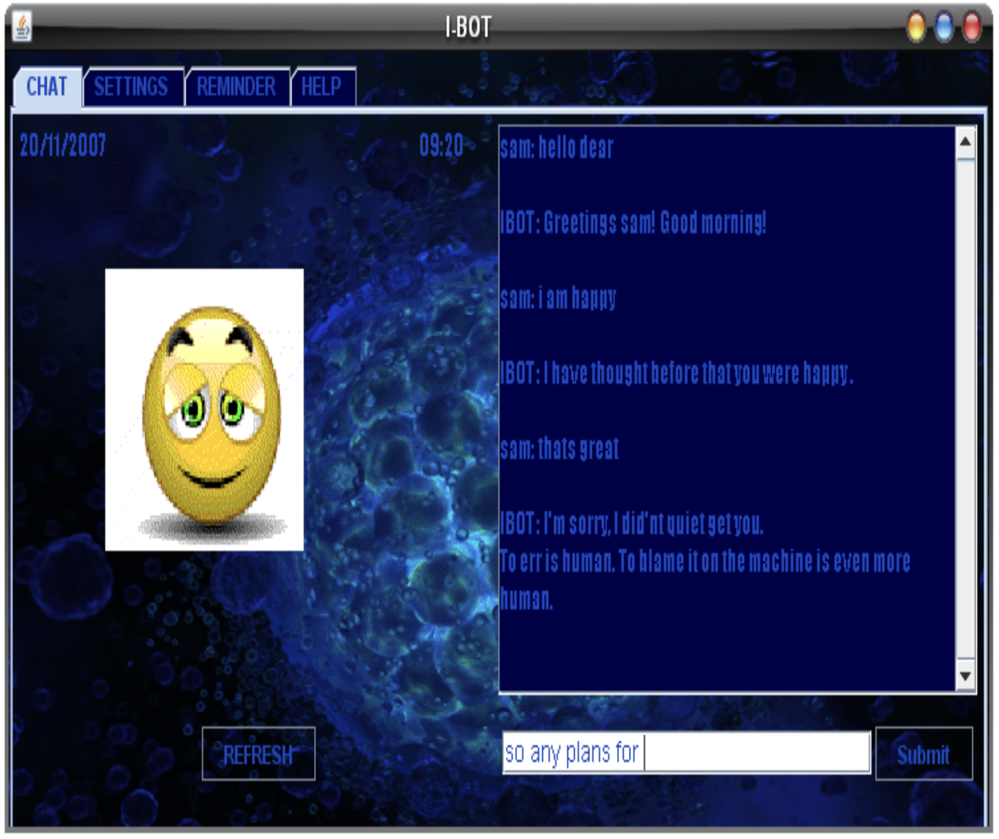

Same student energy, very different tools


A better way to read this moment
AI makes the first draft easier. That makes thinking the edge.
Code appears faster.
Boilerplate, scaffolding, and first drafts arrive in minutes.
Thinking decides what deserves to exist.
What to build, why, and how to know it's right — that's still on you.
Personal note · 2008
My final-year project was an AI chatbot.
Same building, same curiosity. Just much harder to actually build.
What changed most by 2026 is not ambition — it's the cost of trying ideas.

Eighteen years later
What changed.
What endured.
Changed
The cost of going from idea to working software dropped sharply.
- 1Boilerplate is essentially free.
- 2Prototypes ship in hours, not weeks.
- 3AI assists across debugging, testing, review, and docs.
- 4Trying an ambitious idea is dramatically easier.
Endured
The things that decide whether software is actually good barely moved.
- 01Correctness still depends on mental models.
- 02Users still depend on the choices we make.
- 03Systems still hide assumptions until they break.
- 04Curiosity and judgment still compound over time.
From the field
Beginners are
already shipping.
CareSmartz Lite
Freshers contributed to real product work when they had context, trust, and useful tools.
- ·They learned fast when the work was framed well.
- ·They asked sharper questions as context grew.
- ·They improved quickly with trust and tooling in place.
Readiness grew through movement, not credentials
When the path changed mid-project, the team learned fast and shipped — by owning the problem.
Learn fast
Pick up the language and the domain quickly enough to participate.
Test assumptions
Use experiments and review to check what is actually true.
Correct course
Change models and choices when evidence says so.
Deliver
Turn the learning loop into working product outcomes.
Engineering work is now humans + AI agents
AI extends across debugging, testing, review, documentation, and communication. Judgment stays with the human.
Human
Owns judgment
What stays human-owned
The better the human judgment, the better the AI outcome.
Correctness
Deciding what "right" means, and proving the system meets it.
Privacy
What data is collected, what's shared, and with whom.
Bias & safety
Who can be harmed, and what guardrails actually hold.
Consequences
Owning what the system does once it lives in the world.
The deeper opportunity
Faster tools make
fundamentals more valuable.
When implementation gets cheap, understanding is the part you cannot outsource.
Classroom topics become product superpowers
Data structures
Scheduling conflicts and indexes are interval problems in disguise.
Databases
Indexes, isolation, and version compatibility decide real outcomes.
Operating systems
Processes, memory, and isolation become concrete once you build one.
Networks
Reliability, ordering, and retries are lived trade-offs in production.
Testing
Testing is structured doubt — equally useful for humans and AI.
Architecture
Alternatives, boundaries, and operational cost remain the central call.
Real example · 1 of 2
A caregiver calendar is also an algorithm problem.
Two visits overlap. Suddenly intervals, unions, and recurrence stop being abstract.
Abstraction is the tool that turns rich product reality into something solvable.
Real example · 2 of 2
SQL behavior reveals what your code is really standing on.
Same query, different version, different result. The stack underneath is doing real work.
AI helps more when the engineer understands the ground truth.
2026 advantage
Build the lesson
while you learn it.
For the first time, ambitious students can experience systems thinking directly — instead of waiting for "later".
If you're learning operating systems, build a tiny world
Vibe-code a hello-world flavor of Linux. Let boot, memory, processes, and I/O become felt experiences.
bootloader
starts the machinekernel
owns the hardwarememory
places stateprocess
runs the worki / o
talks to the worldIn 2026, this is practical enough to try while you learn.
If you're learning networks, send real packets
Build a tiny app. Send the same data over both TCP and UDP. Watch the trade-offs become visible.
How to build your beginner's advantage now
Practice that compounds — through fundamentals, AI, and your own taste.
- 1Start from first principles before you reach for a prompt.
- 2Build small, personal, useful systems while you study.
- 3Use AI as a thought partner — keep your reasoning active.
- 4Write tests, explain trade-offs, keep your evidence.
- 5Ask better questions than your peers.
Future outlook: jobs will change
Some roles disappear. New ones appear. Many existing roles change. People with judgment, curiosity, and first-principles thinking rarely go out of fashion.
Source · World Economic Forum · Future of Jobs Report 2025